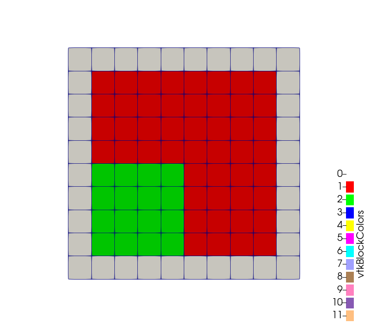

- block_idSubdomain id to set for inside of the combinatorial
C++ Type:unsigned short
Description:Subdomain id to set for inside of the combinatorial
- combinatorial_geometryFunction expression encoding a combinatorial geometry
C++ Type:std::string
Description:Function expression encoding a combinatorial geometry
- inputThe mesh we want to modify
C++ Type:MeshGeneratorName
Description:The mesh we want to modify
ParsedSubdomainMeshGenerator
Uses a parsed expression (combinatorial_geometry) to determine if an element (via its centroid) is inside the region defined by the expression and assigns a new block ID.
Example
The desired example mesh is a 1-by-1 2D square which contains Block 1 (a centered 0.8-by-0.8 square) and Block 2 (a 0.4-by-0.4 square located in the bottom left quarter of Block 1). The remaining edge of the square can be Block 0.
The combinatorial expression that defines Block 1 is below.
x > 0.1 & x < 0.9 & y > 0.1 & y < 0.9
The expression
x < 0.5 & y < 0.5
can partially define Block 2, but the region outside Block 1 also needs to be excluded. The input file syntax needed to generate this example is shown below.
[Mesh]
[./gmg]
type = GeneratedMeshGenerator
dim = 2
nx = 10
ny = 10
xmax = 1
ymax = 1
uniform_refine = 2
[]
[./subdomains]
type = ParsedSubdomainMeshGenerator
input = gmg
combinatorial_geometry = 'x > 0.1 & x < 0.9 & y > 0.1 & y < 0.9'
block_id = 1
[]
[./subdomains2]
type = ParsedSubdomainMeshGenerator
combinatorial_geometry = 'x < 0.5 & y < 0.5'
excluded_subdomain_ids = '0'
block_id = 2
input = subdomains
[]
[]
The final mesh output is:
Input Parameters
- block_nameSubdomain name to set for inside of the combinatorial
C++ Type:SubdomainName
Description:Subdomain name to set for inside of the combinatorial
- constant_expressionsVector of values for the constants in constant_names (can be an FParser expression)
C++ Type:std::vector
Description:Vector of values for the constants in constant_names (can be an FParser expression)
- constant_namesVector of constants used in the parsed function (use this for kB etc.)
C++ Type:std::vector
Description:Vector of constants used in the parsed function (use this for kB etc.)
- excluded_subdomain_idsA set of subdomain ids that will not changed even if they are inside/outside the combinatorial geometry
C++ Type:std::vector
Description:A set of subdomain ids that will not changed even if they are inside/outside the combinatorial geometry
Optional Parameters
- control_tagsAdds user-defined labels for accessing object parameters via control logic.
C++ Type:std::vector
Description:Adds user-defined labels for accessing object parameters via control logic.
- disable_fpoptimizerFalseDisable the function parser algebraic optimizer
Default:False
C++ Type:bool
Description:Disable the function parser algebraic optimizer
- enableTrueSet the enabled status of the MooseObject.
Default:True
C++ Type:bool
Description:Set the enabled status of the MooseObject.
- enable_ad_cacheTrueEnable cacheing of function derivatives for faster startup time
Default:True
C++ Type:bool
Description:Enable cacheing of function derivatives for faster startup time
- enable_auto_optimizeTrueEnable automatic immediate optimization of derivatives
Default:True
C++ Type:bool
Description:Enable automatic immediate optimization of derivatives
- enable_jitTrueEnable just-in-time compilation of function expressions for faster evaluation
Default:True
C++ Type:bool
Description:Enable just-in-time compilation of function expressions for faster evaluation
- evalerror_behaviornanWhat to do if evaluation error occurs. Options are to pass a nan, pass a nan with a warning, throw a error, or throw an exception
Default:nan
C++ Type:MooseEnum
Description:What to do if evaluation error occurs. Options are to pass a nan, pass a nan with a warning, throw a error, or throw an exception
Advanced Parameters
Input Files
- modules/stochastic_tools/examples/surrogates/combined/trans_diff_2d/trans_diff_sub.i
- modules/ray_tracing/test/tests/ray_kernels/material_integral_ray_kernel/material_integral_ray_kernel.i
- modules/ray_tracing/test/tests/ray_tracing_study/multiple_subdomains/multiple_subdomains.i
- test/tests/meshgenerators/parsed_subdomain_mesh_generator/parsed_subdomain_mg.i
- test/tests/meshgenerators/parsed_generate_sideset/parsed_generate_sideset.i
- modules/tensor_mechanics/test/tests/shell/static/pinched_cylinder_symm.i